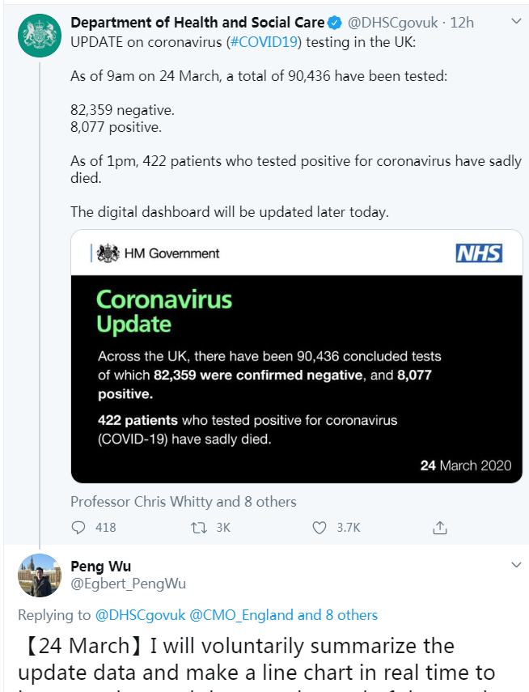

资讯详情
原文链接 备份链接 491 来源：正和岛 作者：叶青 03-24正在打榜，当前第22 1 、武汉 1 例与襄阳 1 例 23 日，周一，晴 23 日，全国大陆新增确诊病例 78 例，新增死亡病例 7 例（湖北 7 例），新增疑似病例 35 …
澎湃新闻记者 张无为
近日，中国留英学生吴芃因每天坚持在推特上发布英国的疫情数据增长图表，获得众多英国民众的称赞。
视频编辑 吴佳颖 责任编辑：储静伟
3月24日，英国《约克郡邮报》（Yorkshire Post）对在英国利兹大学留学的中国学生吴芃进行了专访。
报道指出，吴芃在英国仅有115例新冠肺炎确诊病例的时候就开始每天发布疫情数据，鼓励民众积极应对。如今英国已有超过8000人感染，3月24日英国已开始全面采取强硬措施。

吴芃从去年四月起在英国利兹大学学习国际企业法。自新冠肺炎疫情暴发以来，吴芃就在密切关注着全球的疫情。
3月5日，英国官方发布该国新冠肺炎确诊病例累计115例，吴芃说，当时英国还未采取应对新冠疫情的更多行动。
当天，他在英国卫生部官方推特下留言发布了第一张英国确诊新冠病例的图表，列出了确诊病例的数量与指数增长曲线的预测。他当时的预测在后来得到了印证：几乎每隔三天，确诊病例数就会翻倍。
吴芃告诉《约克郡邮报》，他这样做的目的很简单，就是根据政府的公开数据每天绘制一个图表，让人们更清楚地了解增长趋势，并鼓励每个人持续关注疫情。
随着疫情在英国逐渐扩大，吴芃的“先见之明”赢得了越来越多专业人士和社交媒体用户的称赞。3月9日，吴芃称，“英国政府需要通过立法制定一些强制性措施，毫无疑问，隔离是最有效的方法。”
从上周开始，他的图表上增加了一条新线，涵盖了目前因新冠肺炎而死亡的人数。他还建了一个平行图表，记录每天进行的测试数量和测试结果呈阳性的百分比。
澎湃新闻（www.thepaper.cn）在英国卫生部官方推特每日发布疫情数据的状态下面发现，点赞最高的推文里，前两条评论都是吴芃发布的数据更新。许多英国民众在推文下面作出“等待吴芃的更新”（wait for peng）、“吴芃应该当首相”（peng for prime minister ）等评论，也有少数不明经过的观众说为啥大家都在喊“peng”？
此外，英国下议院议员、医疗系统工作人员也都关注了吴芃的推特。

当地时间3月23日，英国首相鲍里斯·约翰逊宣布了进一步的强硬措施，下令民众居家隔离防疫、关闭全国大多数营业场所、禁止一切社交聚会。
根据英国卫生与社会保健部消息，截至当地时间3月24日9时，英国新冠肺炎确诊病例达8077例，单日新增1427例。
在采访中，吴芃说，他会继续每天更新，直到疫情形势逆转。
戳这里进入
“全国新型冠状病毒感染病例实时地图”↓↓
本期编辑 周玉华
推荐阅读


原文链接 备份链接 491 来源：正和岛 作者：叶青 03-24正在打榜，当前第22 1 、武汉 1 例与襄阳 1 例 23 日，周一，晴 23 日，全国大陆新增确诊病例 78 例，新增死亡病例 7 例（湖北 7 例），新增疑似病例 35 …
原文链接 备份链接 【财新网】（记者 宿慧娴 黄姝伦 综合）国际疫情继续呈暴发态势。在欧洲、美国和伊朗等地抗疫仍处于“白热化”的同时，非洲、南亚和东南亚的疫情大有抬头之势。 病毒是否“怕热”，放过非洲？2月14日，埃及确诊了非洲大陆首个新 …
原文链接 备份链接 截至北京时间3月22日12时，除中国外，184个国家和地区累计确诊222707例新冠肺炎，“钻石公主”号邮轮712例。 当前，欧美疫情仍旧快速蔓延。其中，意大利病例突破5万例，总理孔特要求全国停止所有非必要的生产活 …
原文链接 备份链接 全球 0800【全球疫情汇总】 据新浪实时统计，截至3月22日8点，除中国（包括港澳台地区）以外，海外新冠肺炎累计确诊220113例，死亡9614例，治愈21817例。 注：新增0表示当天暂未宣布数据。数据来源： …
原文链接 备份链接 综合报道，据美国约翰斯·霍普金斯大学发布的实时统计数据显示，截至美国东部时间21日9时13分(北京时间21日21时13分)，全球新冠肺炎确诊病例累计达284566例，死亡病例达11868例。 其中，中国以外，意大利、西 …